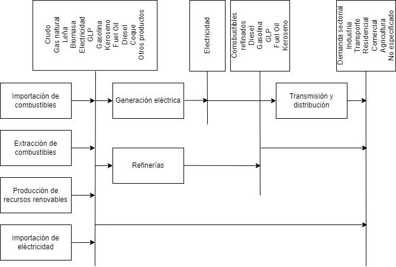

Modelo de Energía
Esta sección presenta una estructura general del modelo de energía (OSeMOSYS-ECU) para la actualización de las metas correspondientes a su 2da NDC.
Estructura general del modelo
El sector energético analiza el consumo de energía, considerando la oferta primaria de asociadas a su producción, importación y exportación. La desagregación de estos combustibles se realiza según el sector consumidor. Las categorías utilizadas se basan en el INGEI de la 5ta Comunicación Nacional (5CN) del Ecuador (MAATE, n.d.).
Tabla 1. Categorías del INGEI consideradas en el modelo de energía
Categoría INGEI |
Nombre |
Descripción |
|---|---|---|
1A1 |
Industrias de energía como actividad principal |
Abarca las tecnologías de generación eléctrica reportadas en los informes Agencia de Regulación y Control de Energía y Recursos Naturales no Renovables (ARCONEL) (ARCONEL, 2022) |
1A2 |
Industrias manufactureras y de la construcción |
Engloba el consumo por tipo de combustible según lo registrado en el Balance de Energía Nacional, en la categoría de industria (MEM, 2023). |
1A3 |
Transporte |
Incluyen los consumos de energía reportados en la sección de transporte del Balance de Energía Nacional (MEM, 2023). Este incluye los consumos de las subsecciones de transporte: Terrestre de pasajeros, Terrestre de carga, Marítimo y Aéreo. |
1A4 |
Otros sectores |
Registra el consumo por tipo de combustible en el Balance de Energía Nacional (MEM, 2023). Se toman los sectores Comercial, servicios públicos, Residencial y Agricultura, pesca y minería. |
1A5 |
No especificado |
Incluye el consumo por tipo de combustible según lo reportado en el Balance de Energía Nacional (MEM, 2023) en la sección otros sectores. |
1B |
Emisiones fugitivas |
Se asocian a la producción de crudo de petróleo y gas natural reportados en el Balance de Energía Nacional (MEM, 2023), en la sección de producción. |
La estructura general del modelo se representa en la Figura 1. El suministro de energía primaria y secundaria consta de cuatro fuentes principales: energías renovables, importaciones de combustibles fósiles, extracción de combustibles en yacimientos e importaciones de electricidad. Estas fuentes se transforman para satisfacer diferentes demandas, incluidas las necesidades industriales, residenciales y comerciales, así como las demandas de transporte. Los vectores energéticos que conforman el suministro de energía primaria y secundaria en este modelo son:
Figura 1. Estructura del modelo de energía
Nomenclatura de códigos
Vectores energéticos
Tabla 2. Vectores energético incluidos en el modelo de energía
Vector energético |
Código |
|---|---|
Crudo de petróleo en yacimiento |
E0CRU |
Crudo de petróleo para consumo |
E1CRU |
Gas natural en yacimiento |
E0NGS |
Gas natural para consumo |
E1NGS |
Leña |
E1FIR |
Biomasa |
E1BIM |
Electricidad importada |
E1ELE |
Electricidad para transmisión |
E1ELE |
Electricidad para distribución |
E2ELE |
Electricidad para consumo |
E3ELE |
Gas licuado de Petróleo (GLP) |
E0LPG |
Gasolina |
E0GSL |
Keroseno |
E1KER |
Jet Fuel |
E1JET |
Diesel |
E1DSL |
Fuel Oil |
E1FO1 |
Biogasolina |
E1BGS |
Coque de petróleo |
E1COK |
Otros productos de petróleo no energético |
E1OPE |
Desechos municipales no biomasa |
E1RDF |
Óleos de desecho |
E1OID |
Carbón de coque |
E1COA |
Gas asociado |
E0GRE |
Emisiones
Tabla 3. Clasificación de emisiones estimadas en el modelo de energía
Código |
Descripción |
|---|---|
CO2_sources |
Dióxido de carbono equivalente de fuentes primarias de energía |
CO2e_DE |
Dióxido de carbono equivalente por consumo en sectores (residencial, comercial, transporte, agricultura, …) |
CO2_DE |
Dióxido de carbono por consumo en sectores (residencial, comercial, transporte, agricultura, …) |
CH4_DE |
Metano por consumo en sectores (residencial, comercial, transporte, agricultura, …) |
N2O_DE |
Óxido nitroso por consumo en sectores (residencial, comercial, transporte, agricultura, …) |
CO2e_PP |
Dióxido de carbono equivalente por consumo en plantas eléctricas |
CO2_PP |
Dióxido de carbono por consumo en plantas de generación eléctrica |
CH4_PP |
Metano por consumo en plantas de generación eléctrica |
N2O_PP |
Óxido nitroso por consumo en plantas de generación eléctrica |
CO2e_REF |
Dióxido de carbono equivalente por refinación de combustibles fósiles |
CO2_REF |
Dióxido de carbono por refinación de combustibles fósiles |
CH4_REF |
Metano por refinación de combustibles fósiles |
N2O_REF |
Óxido nitroso por refinación de combustibles fósiles |
CO2e_FUG |
Dióxido de carbono equivalente por producción de combustibles fósiles |
CO2_FUG |
Dióxido de carbono por producción de combustibles fósiles |
CH4_FUG |
Metano por producción de combustibles fósiles |
N2O_FUG |
Óxido nitroso por producción de combustibles fósiles |
Tecnologías
Tabla 4. Tecnologías incluidas en el modelo de energía
Descripción |
Código |
|---|---|
Importación/Distribución - Diesel |
DIST_DSL |
Importación/Distribución - Gasolina |
DIST_GSL |
Importación/Distribución - Gas Natural |
DIST_NGS |
Importación/Distribución - Gas Licuado de Petróleo (GLP) |
DIST_LPG |
Importación/Distribución - Coque |
DIST_COK |
Importación/Distribución - Keroseno |
DIST_KER |
Importación/Distribución - Jet Fuel |
DIST_JET |
Extracción/Transformación Directa - Leña |
DIST_FIR |
Extracción/Transformación Directa - Carbón Vegetal |
DIST_CHA |
Extracción/Transformación Directa - Biomasa |
DIST_BIM |
Extracción/Transformación Directa - Biogasolina |
DIST_BGS |
Importación/Distribución - Otros Productos Energéticos |
DIST_OPE |
Importación/Distribución - Residuos Municipales no Biomasa |
DIST_RDF |
Importación/Distribución - Óleos de Desecho |
DIST_OID |
Reservas - Gas Natural |
EXTT_NGS |
Importación/Distribución - Gas de Refinería |
ADD_GRE |
Extracción/Transformación - Crudo |
EXTT_CRU |
Importación - Crudo |
DIST_CRU |
Importación/Distribución - Carbón |
DIST_COA |
Importación/Distribución - Fuel Oil |
DIST_FOI |
Transformación - Hidroeléctrica de Represa Amazonas Grande (+450 MW) |
PPHDAMAB |
Transformación - Hidroeléctrica de Represa Amazonas Mediana (<450 MW) |
PPHDAMAM |
Transformación - Hidroeléctrica de Represa Amazonas Pequeña (<50 MW) |
PPHDAMAS |
Transformación - Hidroeléctrica de Represa Pacífico Mediana (<450 MW) |
PPHDAMPM |
Transformación - Hidroeléctrica de Represa Pacífico Pequeña (<50 MW) |
PPHDAMPS |
Transformación - Hidroeléctrica de Paso Amazonas Grande (+450 MW) |
PPHRORAB |
Transformación - Hidroeléctrica de Paso Amazonas Mediana (<450 MW) |
PPHRORAM |
Transformación - Hidroeléctrica de Paso Amazonas Pequeña (<50 MW) |
PPHRORAS |
Transformación - Hidroeléctrica de Paso Pacífico Mediana (<450 MW) |
PPHRORPM |
Transformación - Hidroeléctrica de Paso Pacífico Pequeña (<50 MW) |
PPHRORPS |
Transformación - Geotérmica |
PPGEO |
Transformación - Eólica |
PPWNDON |
Transformación - Eólica Distribuida |
PPWNDD |
Transformación - Hidroeléctrica Aislada |
PPIHD |
Transformación - Hidroeléctrica Distribuida |
PPHD |
Transformación - Solar de Transmisión |
PPPVT |
Transformación - Solar de Transmisión con Almacenamiento |
PPPVTS |
Transformación - Solar Distribuido |
PPPVD |
Transformación - Solar Distribuido con Almacenamiento |
PPPVDS |
Importación - Electricidad |
IMPELE |
Importación/Distribución - Gasolina |
DIST_GSL |
Importación/Distribución - Jet Fuel |
DIST_JET |
Importación/Distribución - Diesel |
DIST_DSL |
Importación/Distribución - Fuel Oil |
DIST_FOI |
Importación/Distribución - GLP |
DIST_LPG |
Transmisión de Electricidad |
ELE_TRANS |
Distribución de Electricidad |
ELE_DIST |
Transformación - Biomasa |
PPBIM |
Transformación - Biogás |
PPBGS |
Transformación - Gas Natural |
PPNGS |
Transformación - Diesel |
PPDSL |
Transformación - Fuel Oil |
PPFOI |
Refinería Secundaria - Diesel |
REF_DSL |
Refinería Secundaria - Gasolina |
REF_GSL |
Refinería Secundaria - GLP |
REF_LPG |
Refinería Secundaria - Fuel Oil |
REF_FOI |
Refinería Secundaria - Jet Fuel |
REF_JET |
Refinería Secundaria - Otros Productos Energéticos |
REF_OPE |
Central Aislada - Refinería de Crudo |
PPCRU |
Central Aislada - Refinería de Diesel |
PPRDSL |
Central Aislada - Refinería de Gas Natural |
PPRNGS |
Planta Distribuida - Fuel Oil |
PPDFOI |
Planta Distribuida - Diesel |
PPDDSL |
Central Aislada - GLP |
PPILPG |
Central Aislada - Biomasa/Residuos |
PPIBIM |
Producción - Crudo |
PROCRU |
Producción - Gas Natural |
PRONGS |
Demanda de Diesel para Comercial |
T5DSLCOM |
Demanda de GLP para Comercial |
T5LPGCOM |
Demanda de Electricidad para Comercial |
T5ELECOM |
Demanda de Fuel Oil para Comercial |
T5FOICOM |
Demanda de Gas Natural para Residencial |
T5NGSRES |
Demanda de Gasolina para Residencial |
T5GSLRES |
Demanda de GLP para Residencial |
T5LPGRES |
Demanda de Electricidad para Residencial |
T5ELERES |
Demanda de Keroseno para Residencial |
T5KERRES |
Demanda de Leña para Residencial |
T5FIRRES |
Demanda de Carbón Vegetal para Residencial |
T5CHARES |
Demanda de Otros productos petroleros no energéticos para Residencial |
T5OPERES |
Demanda de Electricidad para Público |
T5ELEPUB |
Demanda de Diesel para Industrial |
T5DSLIND |
Demanda de Gasolina para Industrial |
T5GSLIND |
Demanda de Gas Natural para Industrial |
T5NGSIND |
Demanda de Electricidad para Industrial |
T5ELEIND |
Demanda de Hidrógeno para Industrial |
T5HYDIND |
Demanda de GLP para Industrial |
T5LPGIND |
Demanda de Biomasa para Industrial |
T5BIMIND |
Demanda de Leña para Industrial |
T5FIRIND |
Demanda de Fuel Oil para Industrial |
T5FOIIND |
Demanda de Diesel para Construcción |
T5DSLCON |
Demanda de Desechos municipales no biomasa para Industrial |
T5RDFIND |
Demanda de Óleos de Desecho para Industrial |
T5OIDIND |
Demanda de Electricidad para Construcción |
T5ELECON |
Demanda de Fuel Oil para Construcción |
T5FOICON |
Demanda de Gasolina para Construcción y otros |
T5GSLCON |
Demanda de GLP para Construcción y otros |
T5LPGCON |
Demanda de Otros productos petroleros para Construcción |
T5OPECON |
Demanda de Crudo para Exportaciones |
T5CRUEXP |
Demanda de Diesel para Exportaciones |
T5DSLEXP |
Demanda de Jet Fuel y otros para Exportaciones |
T5JETEXP |
Demanda de Fuel Oil para Exportaciones |
T5FOIEXP |
Demanda de Jet Fuel y otros para Transporte - Aéreo |
T5JETTAE |
Demanda de Diesel para Transporte - Marítimo |
T5DSLTMA |
Demanda de Gas Natural para Transporte - Marítimo |
T5NGSTMA |
Demanda de GLP para Transporte - Marítimo |
T5LPGTMA |
Demanda de Electricidad para Transporte - Marítimo |
T5ELETMA |
Demanda de Fuel Oil para Transporte - Marítimo |
T5FOITMA |
Demanda de Diesel para Transporte - Carretera |
T5DSLTRO |
Demanda de Gasolina para Transporte - Carretera |
T5GSLTRO |
Demanda de Gas Natural para Transporte - Carretera |
T5NGSTRO |
Demanda de GLP para Transporte - Carretera |
T5LPGTRO |
Demanda de Electricidad para Transporte - Carretera |
T5ELETRO |
Demanda de Biocombustible/Biogás para Transporte - Carretera |
T5BGSTRO |
Demanda de Fuel Oil para Transporte - Carretera |
T5FOITRO |
Demanda de Coque de Petróleo Industrial |
T5INDCOK |
Demanda de Residuos Vegetales Industriales |
T5VEGWAS |
Demanda de Fuel Oil para Transporte |
T5TRNFOI |
Demanda de Gasolina para Comercial |
T5COMGSL |
Demanda de Gasolina para Transporte Aéreo |
T5TAEGSL |
Demanda de Gasolina para Transporte Marítimo |
T5TMAGSL |
Demanda de Diesel para Transporte de Carga Pesada |
T5TCADSL |
Demanda de Gasolina para Transporte de Carga Pesada |
T5TCAGSL |
Demanda de Keroseno para Construcción |
T5CONKER |
Demanda de Diesel para Agricultura |
T5AGRDSL |
Demanda de GLP para Agricultura |
T5AGRLPG |
Demanda de Gasolina para Agricultura |
T5AGRGSL |
Demanda de Otros productos petroleros no energéticos para Agricultura |
T5AGROTP |
Escenarios
El sector energético contempla tres escenarios. El escenario Tendencial de la 1ra NDC representa un caso base sin iniciativas. Para definir un caso sin iniciativas se utilizan los datos históricos de demandas energéticas (MEM, 2023) y la generación eléctrica de ARCONEL (ARCONEL, 2022), los cuales se ajustan para compensar el efecto de las iniciativas registradas en la data histórica.
Las iniciativas consideradas en este proceso son las listadas en la 1ra NDC para el escenario Incondicional 1ra NDC (Gobierno de Ecuador, 2019):
Programas de Cocinas de Inducción PEC
Programa de Eficiencia Energética – Optimización de Generación Eléctrica y Eficiencia Energética (OG&EE)
Metro de Quito – Línea 1
Tranvía – Transporte Público de Pasajeros
Desarrollo de Centrales Hidroeléctricas: - Coca Codo Sinclair - Delsitanisagua - Minas San Francisco - Manduriacu - Toachi Pilatón
Energía Renovable no Convencional: - Proyecto Eólico Villonaco y Tropezón - Proyecto Solar - Proyecto de Biogás
El escenario Incondicional 2da NDC incluye 17 iniciativas nacionales para reducir las emisiones en Ecuador. Estas iniciativas abarcan:
La descarbonización del sector eléctrico, mediante la incorporación de 9 proyectos hidroeléctricos y 3 proyectos de energías renovables no convencionales.
Medidas de eficiencia energética en el sector petrolero, que incluyen el programa OG&EE y el uso de gasolina con etanol.
La promoción del uso de transporte público, a través de 3 iniciativas específicas.
En la Tabla 5 se detallan las iniciativas del escenario Incondicional de la 2da NDC.
Tabla 5. Descripción de iniciativas para el escenario Incondicional de la 2daNDC.
Categoría |
Iniciativas |
Descripción |
|---|---|---|
Desarrollo de Centrales Hidroeléctricas |
Central Hidroeléctrica Coca Codo Sinclair |
1500 MW en 2015 |
Central Hidroeléctrica Manduriacu |
65 MW en 2015 |
|
Central Hidroeléctrica Mazar |
170 MW en 2026 |
|
Proyecto Hidroeléctrico Minas San Francisco |
270 MW en 2017 |
|
Proyecto Hidroeléctrico Sopladora |
487 MW en 2026 |
|
Proyecto Hidroeléctrico Delsitanisagua |
180 MW en 2019 |
|
Complejo Hidroeléctrico Toachi Pilatón - Sarapullo |
49 MW en 2022 |
|
Complejo Hidroeléctrico Toachi Pilatón - Alluriquín |
205.4 MW en 2025 |
|
Proyecto hidroeléctrico Soldados Yanuncay |
7.2 MW en 2026 |
|
Energía Renovable no Convencional |
Proyecto Eólico Villonaco |
16.5 MW en 2013 |
Sistema Híbrido Isabela (Fase II) |
0.958 MW en 2027 |
|
Proyecto Fotovoltáico Conolophus |
14.8 MW en 2027 |
|
Eficiencia Energética |
Programa de Soluciones Energéticas Upstream |
En 2010, se optimiza el aprovechamiento de combustible fósil en unidades de generación de electricidad a gas y gas/crudo, máquinas optimizadas para producción de electricidad. Esto permite desplazar la utilización de diésel para la producción de energía eléctrica. |
Preparación y despacho de gasolina Ecopaís 85 |
En 2020 se desarrolló el plan para la introducción de la gasolina con etanol (Ecopaís de 85 octanos). Este combustible disminuye el consumo de nafta de alto octano importada para la preparación de gasolina extra y la reemplaza con etanol de producción nacional lo que fomenta el sector agrícola y reduce las emisiones de gases de efecto invernadero de vehículos a gasolina. |
|
Transporte público |
Tranvía - Transporte Público de Pasajeros |
El Tranvía de Cuenca, en su etapa de operación comercial, es un sistema de transporte público masivo que promueve el uso de energía limpia, evitando de esta manera el incremento de gases de efecto invernadero en la ciudad de Cuenca. |
Modernización del Sistema de Transporte Público Metropolitano de Pasajeros de Quito |
Se reemplazan unidades que han cumplido su vida útil por 60 trolebuses. |
|
Metro de Quito - Línea 1 |
Se trata de una iniciativa para transporte público de pasajeros que se encuentra en operación. |
El escenario Incondicional y Condicional 2daNDC incluye 17 iniciativas nacionales para reducir las emisiones en Ecuador. Estas iniciativas abarcan:
La descarbonización del sector eléctrico, mediante la incorporación de 9 proyectos hidroeléctricos y 3 proyectos de energías renovables no convencionales.
Medidas de eficiencia energética en el sector petrolero, que incluyen el programa OG&EE y el uso de gasolina con etanol.
La promoción del uso de transporte público, a través de 3 iniciativas.
En la Tabla 6 se detallan las iniciativas del escenario Incondicional de la 2da NDC.
Tabla 6. Descripción de iniciativas para el escenario Incondicional y Condicional de la 2daNDC
Categoría |
Iniciativa |
Descripción |
|---|---|---|
Desarrollo de Centrales Hidroeléctricas |
Central Hidroeléctrica Coca Codo Sinclair |
1500 MW en 2015 |
Central Hidroeléctrica Manduriacu |
65 MW en 2015 |
|
Central Hidroeléctrica Mazar |
170 MW en 2026 |
|
Proyecto Hidroeléctrico Minas San Francisco |
270 MW en 2017 |
|
Proyecto Hidroeléctrico Sopladora |
487 MW en 2026 |
|
Proyecto Hidroeléctrico Delsitanisagua |
180 MW en 2019 |
|
Complejo Hidroeléctrico Toachi Pilatón - Sarapullo |
49 MW en 2022 |
|
Complejo Hidroeléctrico Toachi Pilatón - Alluriquín |
205.4 MW en 2025 |
|
Proyecto hidroeléctrico Soldados Yanuncay |
7.2 MW en 2026 |
|
Proyecto Hidroeléctrico Santiago |
2400 MW en 2030 |
|
Proyecto Hidroeléctrico Cardenillo |
595.6 MW en 2030 |
|
Energía Renovable no Convencional |
Proyecto Eólico Villonaco |
16.5 MW en 2013 |
Sistema Híbrido Isabela (Fase II) |
0.958 MW en 2027 |
|
Proyecto Fotovoltáico Conolophus |
14.8 MW en 2027 |
|
Proyecto Geotérmino Chachimbiro |
50 MW en 2032 |
|
Proyecto Fotovoltáico Matala |
100 MW en 2028 |
|
Proyecto Eólico Ducal Membrillo |
80.5 MW en 2028 |
|
Proyecto Fotovoltaico La Ceiba |
200 MW en 2028 |
|
Proyecto Eólico Pimo |
150.5 MW en 2026 |
|
Proyecto Fotovoltáico Flotante Mazar |
159 MW en 2025 |
|
Proyecto Fotovoltaico Huascachaca |
19.73 MW en 2026 |
|
Sistema Solar Fotovoltaica San Cristóbal (Fase II) |
2.26 MW en 2029 |
|
Isla Floreana 100% Renovable |
0.226 MW en 2029 |
|
Complejo Fotovoltaico NEOEN Solar |
180 MW en 2032 |
|
Eficiencia Energética |
Programa de Soluciones Energéticas Upstream |
En 2010, se optimiza el aprovechamiento de combustible fósil en unidades de generación de electricidad a gas y gas/crudo, máquinas optimizadas para producción de electricidad. Esto permite desplazar la utilización de diésel para la producción de energía eléctrica. |
Preparación y despacho de gasolina Ecopaís 86 |
En 2020 se desarrolló el plan para la introducción de la gasolina con etanol (Ecopaís de 85 octanos). Este combustible disminuye el consumo de Nafta de Alto Octano importada para la preparación de gasolina extra y la reemplaza con etanol de producción nacional que fomenta al sector agrícola y reduce las emisiones de gases de efecto invernadero de vehículos a gasolina. |
|
Transporte público |
Tranvía - Transporte Público de Pasajeros |
El Tranvía de Cuenca, en su etapa de Operación Comercial, es un sistema de transporte público masivo que promueve el uso de energía limpia, evitando de esta manera el incremento de gases de efecto invernadero en la ciudad de Cuenca. |
Sistema eléctrico de monorriel intracantonal para la provincia Guayas |
Sistema eléctrico de monorriel intracantonal para la provincia Guayas |
|
Renovación y Descarbonización del Transporte Público y Comercial en el Ecuador |
Renovación y Descarbonización del Transporte Público y Comercial en el Ecuador |
|
Modernización del Sistema de Transporte Público Metropolitano de Pasajeros de Quito |
Se reemplazan unidades que han cumplido su vida útil por 60 Trolebuses. |
|
Metro de Quito - Línea 1 y 2 |
Se trata de una iniciativa para transporte público de pasajeros que se encuentra en operación. |
Referencias
MAATE. (n.d.). 5ta Comunicación Nacional.
ARCONEL. (2022). Estadística del Sector Eléctrico Ecuatoriano. https://anda.inec.gob.ec/anda/index.php/catalog/ARCERNNR
MEM. (2023). Balance Energético Nacional 2023. https://www.recursosyenergia.gob.ec/wp-content/uploads/2024/08/BEN_2023-cap_7.pdf
Gobierno de Ecuador. (2019). Primera contribución determinada a nivel nacional para el acuerdo de París bajo la convención marco de Naciones Unidas sobre cambio climático. https://unfccc.int/sites/default/files/NDC/2022-06/Primera%20NDC%20Ecuador.pdf